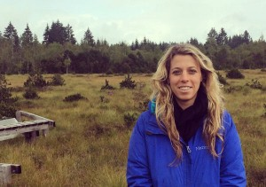
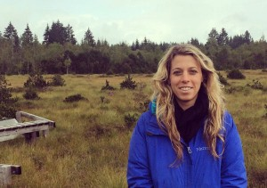
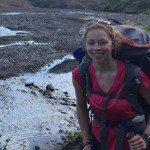
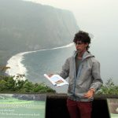
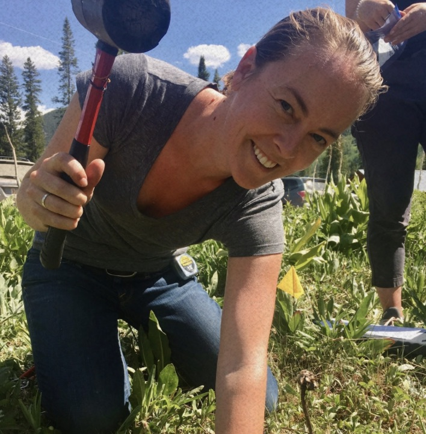
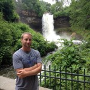
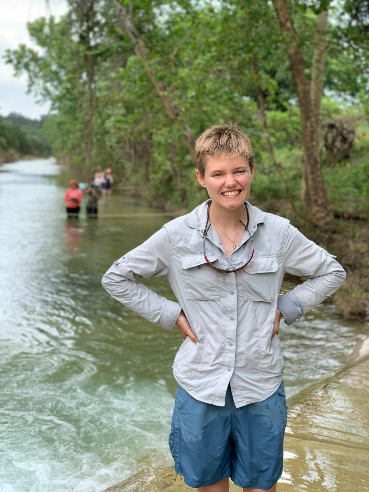

People
A generic page for every non-generic situation.
 

Daniella M. Rempe
Daniella’s long-term research goal is to promote the sustainability of water resources by contributing to a mechanistic understanding of groundwater and vadose-zone processes, particularly in mountainous regions. Her current research focuses on understanding controls on the spatial pattern of weathering on actively eroding landscapes and the implications of that weathering on moisture storage and transport in fractured rock.
Daniella’s expertise lies in hydrologic field observations, fluid flow and near surface geophysics. She holds a doctorate in Earth and Planetary Science and a Masters of Science in Environmental Engineering, both from the University of California, Berkeley and a Bachelors of Science in Geosystems Engineering and Hydrogeology from the University of Texas at Austin. Daniella’s research experience and outlook are highly interdisciplinary and she actively collaborates with a diverse network of scientists through the NSF Critical Zone Observatory program and the Wyoming Center for Environmental Hydrology and Geophysics.
Graduate Students
Graduate Students
Alison Tune

PhD expected 2021
B.A. Environmental Earth Science, Washington University in St. Louis, 2014
Alison is interested in understanding the biotic influences on water cycling throughout the critical zone. Her research focuses on the role of microorganisms on dictating water flow pathways in the unsaturated zone. In particular, she is interested in weathering induced by microbial activity within the fractured hillslopes of the Eel Critical Zone Observatory, and how that is represented in chemical and physical observations.
Logan Marcos Schmidt

PhD expected 2022
B.S. Geophysics, University of Texas at Austin, 2017
Logan is interested in the shallow subsurface and its interaction with terrestrial ecosystems. His graduate research seeks to characterize and model the physical and hydraulic properties of the upper <100 meters of the surface using geophysical techniques.
Undergraduate Students
Xochitlinda Gonzales
B.S. Environmental Science expected 2021
Postdoctoral Researchers (Past and Present)
K Dana Chadwick

Ph.D. Stanford
I am an Earth System scientist researching the interconnections among ecosystems, critical zone processes, and the evolution of landscapes. My work utilizes airborne platforms that integrate imaging spectroscopy and lidar sensors, extensive field sampling campaigns, and laboratory analyses. I combine these techniques in order to uncover spatial distributions of ecosystem characteristics and link these patterns to underlying processes.Jesse Hahm

Ph.D..... where is he now...
STUFF ABOUT JESSE
Armaghan Abed-Elmdoust
Ph.D.....where are they now..
Technical Staff
Brandon Minton

Research Engineer/Scientist Associate II
M.S. Geosciences, The University of Texas at Austin, 2016
B.S. Marine and Freshwater Biology, The University of Texas at Austin, 2012
Brandon is a graduate of The University of Texas in his home town of Austin. He first received his B.S. in Marine and Freshwater Biology at UT Austin after serving in the U.S. Coast Guard. Early research interests focused on the biodiversity of herbivorous fish populations within reef communities located along the Mesoamerican Barrier Reef System. However, after shifting over to a Geosciences track for his master’s work, Brandon’s interests moved towards exploring and understanding deepwater sedimentation processes, specifically minibasin formation. After completing his M.S. in Geosciences, he now serves as a research engineer for the Rempe Hydrology Group at the University of Texas at Austin.
Erica McCormick

B.S. University of Texas at Austin, 2020
STUFF ABOUT JESSE
Erica McCormick

B.S. University of Texas at Austin, 2020
STUFF ABOUT JESSE